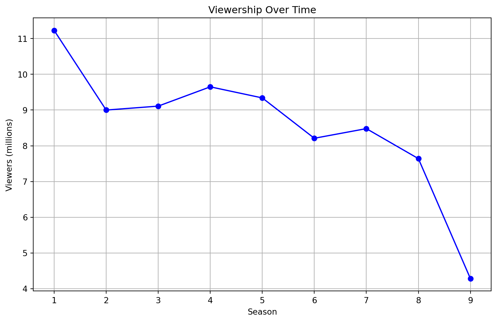
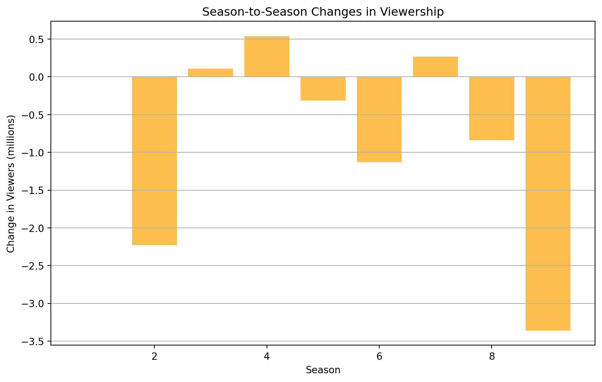

| Season | First aired, Viewers (millions) | Rating Rotten Tomatoes | |
|---|---|---|---|
| 0 | 1 | 11.23 | 7.8 |
| 1 | 2 | 9.00 | 8.4 |
| 2 | 3 | 9.11 | 8.4 |
| 3 | 4 | 9.65 | 7.7 |
| 4 | 5 | 9.34 | 8.3 |
| 5 | 6 | 8.21 | 7.3 |
| 6 | 7 | 8.48 | 7.8 |
| 7 | 8 | 7.64 | 6.3 |
| 8 | 9 | 4.28 | 7.2 |
The Office: Overview
A Brief Description of The Office
The Office is an American mockumentary sitcom television series based on the 2001–2003 BBC series of the same name created by (and starring) Ricky Gervais and Stephen Merchant. Adapted for NBC by Greg Daniels, a veteran writer for Saturday Night Live, King of the Hill, and The Simpsons, the show depicts the everyday work lives of office employees at the Scranton, Pennsylvania, branch of the fictional Dunder Mifflin Paper Company, and aired from March 24, 2005, to May 16, 2013, with a total of nine seasons consisting of 201 episodes.
Show Logo
Basic Statistics
Here is a summary of some basic statistics on viewership and ratings:


Viewership decreased from 11.23 million in Season 1 to 9.0 million by Season 2, dropping 2.23 million. A slight recovery occurred between Seasons 2 and 4, reaching 9.65 million. However, a steady decline followed, with a significant drop of 3.93 million from Season 6 (8.21 million) to Season 9 (4.28 million).
.